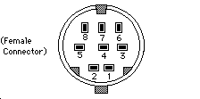
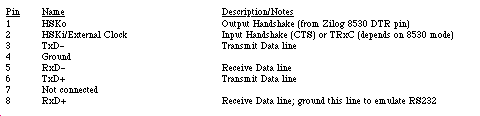
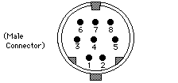
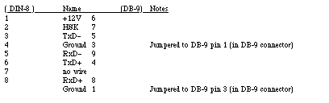

|
|
This note gives pinout descriptions for some of the Macintosh
Plus ports and Macintosh Plus cables that are different than the Macintosh 128K and 512K.
[Jan 01 1986]
|
Introduction
Below are pinout descriptions for some Macintosh Plus ports and cables that are
different than the Macintosh 128K and 512K. Note that any unconnected pins are
omitted.
Macintosh Plus Port Pinouts

Figure 1: Macintosh Plus Serial Connectors (Mini DIN-8)

Figure 2: Macintosh Plus SCSI Connector (DB-25)
Pin Name Description/Notes
1 REQ-
2 MSG-
3 I/O-
4 RST-
5 ACK-
6 BSY-
7 Ground
8 DB0-
9 Ground
10 DB3-
11 DB5-
12 DB6-
13 DB7-
14 Ground
15 C/D-
16 Ground
17 ATN-
18 Ground
19 SEL-
20 DBP-
21 DB1-
22 DB2-
23 DB4-
24 Ground
25 TPWR Not connected
Back to top
Macintosh Plus Cable Pinouts

Figure 3: Apple System Peripheral-8 Cable
(connects Macintosh Plus to ImageWriter II and Apple Personal Modem )
(Product part number: M0187)
(Cable assembly part number: 590-0340-A (stamped on cable itself).
( DIN-8 ) ( DIN-8 )
1 2
2 1
3 5
4 4
5 3
6 8
7 7
8 6
Macintosh Plus Adapter Cable
(connects Macintosh Plus DIN-8 to existing Macintosh DB-9 cables)
(Apple part number: M0189)
(Cable assembly part number: 590-0341-A (stamped on cable itself).

Back to top
References
Macintosh Hardware Reference Manual
Back to top
Downloadables
|

|
Acrobat version of this Note (156K)
|
Download
|
Back to top
|